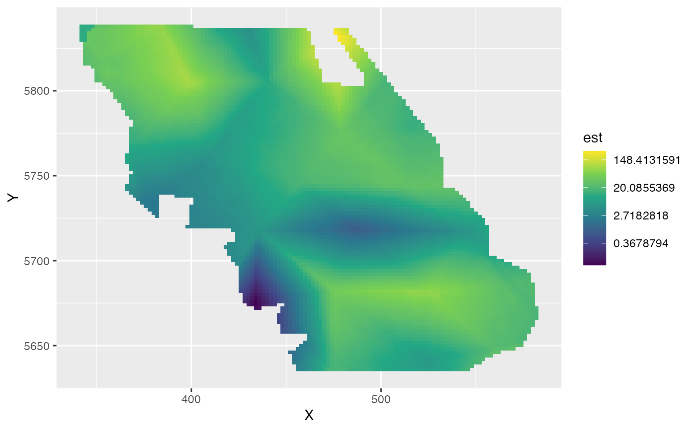
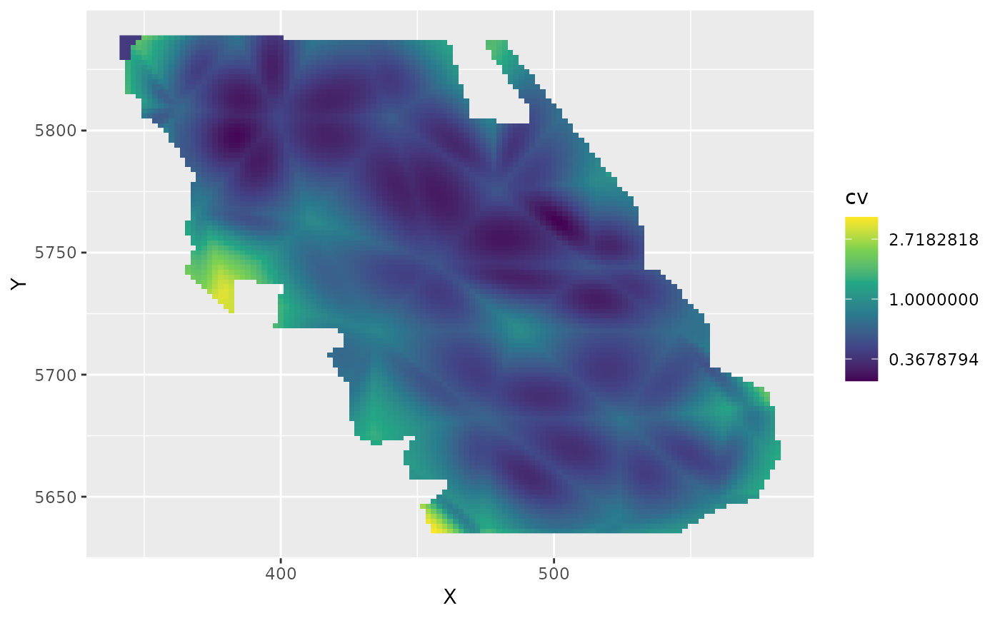
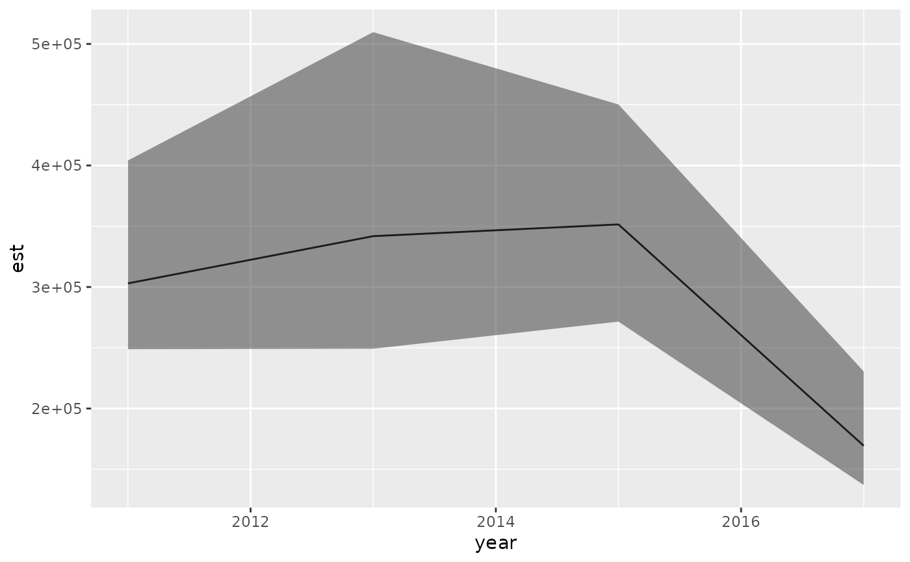
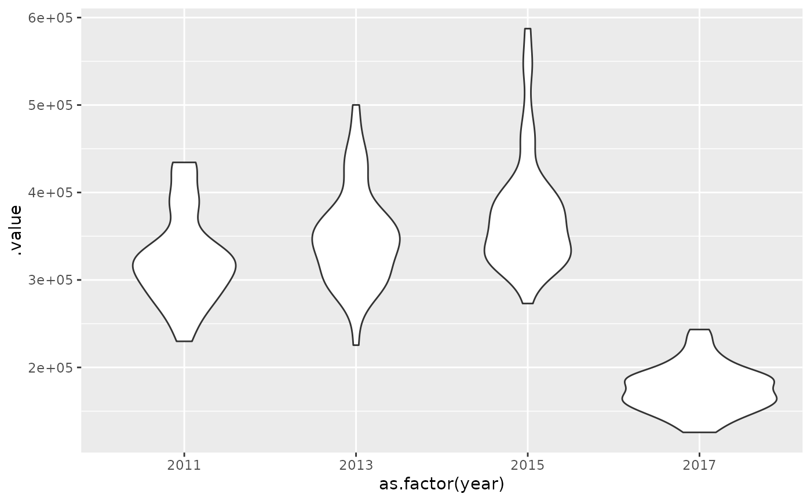

![[Experimental]](figures/lifecycle-experimental.svg)
Arguments
- object
Output from
tmbstan::tmbstan()run on thetmb_objelement of ansdmTMB()model. E.g.,tmbstan(your_model$tmb_obj).
Value
Returns a matrix of parameter samples. Rows correspond to the order
of your_model$tmb_obj$env$last.par.best. Columns correspond to
posterior samples. Is used internally by predict.sdmTMB() to make
fully Bayesian predictions. See the tmbstan_model argument
in predict.sdmTMB().
Examples
# \donttest{
mesh <- make_mesh(pcod_2011, c("X", "Y"), cutoff = 35) # quite coarse
# Fit with marginal maximum likelihood first:
fit <- sdmTMB(
density ~ 0 + as.factor(year),
data = pcod_2011, mesh = mesh,
family = tweedie(link = "log"),
priors = sdmTMBpriors(
matern_s = pc_matern(range_gt = 10, sigma_lt = 5),
matern_st = pc_matern(range_gt = 10, sigma_lt = 5),
b = normal(rep(0, 4), scale = rep(10, 4)) # 4 main effects
),
time = "year"
)
fit
#> Spatiotemporal model fit by ML ['sdmTMB']
#> Formula: density ~ 0 + as.factor(year)
#> Mesh: mesh (isotropic covariance)
#> Time column: year
#> Data: pcod_2011
#> Family: tweedie(link = 'log')
#>
#> coef.est coef.se
#> as.factor(year)2011 3.17 0.38
#> as.factor(year)2013 3.20 0.40
#> as.factor(year)2015 3.23 0.40
#> as.factor(year)2017 2.52 0.41
#>
#> Dispersion parameter: 15.89
#> Tweedie p: 1.59
#> Matern range: 21.80
#> Spatial SD: 2.56
#> Spatiotemporal SD: 1.35
#> ML criterion at convergence: 3057.095
#>
#> See ?tidy.sdmTMB to extract these values as a data frame.
# Create a 'map' vector for TMB to 'fix' kappa at the MLE value
# to improve speed of convergence.
# Factor NA values cause TMB to fix or map the parameter
# at the starting value.
pars <- sdmTMB::get_pars(fit)
kappa_map <- factor(rep(NA, length(pars$ln_kappa)))
# Rebuild model updating some elements:
fit_mle <- update(
fit,
control = sdmTMBcontrol(
start = list(
ln_kappa = pars$ln_kappa
),
map = list(
ln_kappa = kappa_map
)
),
do_fit = FALSE # no need to actually fit
)
#> ℹ Initiating `ln_kappa` at specified starting value(s) of:
#> -2.042, -2.042
#> ℹ Fixing (mapping) `ln_kappa` at specified starting value(s) of:
#> -2.042, -2.042
# Will take a few minutes:
library(tmbstan)
m_stan <- tmbstan(fit_mle$tmb_obj, iter = 100, chains = 1)
#>
#> SAMPLING FOR MODEL 'tmb_generic' NOW (CHAIN 1).
#> Chain 1:
#> Chain 1: Gradient evaluation took 0.004154 seconds
#> Chain 1: 1000 transitions using 10 leapfrog steps per transition would take 41.54 seconds.
#> Chain 1: Adjust your expectations accordingly!
#> Chain 1:
#> Chain 1:
#> Chain 1: WARNING: There aren't enough warmup iterations to fit the
#> Chain 1: three stages of adaptation as currently configured.
#> Chain 1: Reducing each adaptation stage to 15%/75%/10% of
#> Chain 1: the given number of warmup iterations:
#> Chain 1: init_buffer = 7
#> Chain 1: adapt_window = 38
#> Chain 1: term_buffer = 5
#> Chain 1:
#> Chain 1: Iteration: 1 / 100 [ 1%] (Warmup)
#> Chain 1: Iteration: 10 / 100 [ 10%] (Warmup)
#> Chain 1: Iteration: 20 / 100 [ 20%] (Warmup)
#> Chain 1: Iteration: 30 / 100 [ 30%] (Warmup)
#> Chain 1: Iteration: 40 / 100 [ 40%] (Warmup)
#> Chain 1: Iteration: 50 / 100 [ 50%] (Warmup)
#> Chain 1: Iteration: 51 / 100 [ 51%] (Sampling)
#> Chain 1: Iteration: 60 / 100 [ 60%] (Sampling)
#> Chain 1: Iteration: 70 / 100 [ 70%] (Sampling)
#> Chain 1: Iteration: 80 / 100 [ 80%] (Sampling)
#> Chain 1: Iteration: 90 / 100 [ 90%] (Sampling)
#> Chain 1: Iteration: 100 / 100 [100%] (Sampling)
#> Chain 1:
#> Chain 1: Elapsed Time: 32.3443 seconds (Warm-up)
#> Chain 1: 33.6584 seconds (Sampling)
#> Chain 1: 66.0027 seconds (Total)
#> Chain 1:
#> Warning: The largest R-hat is 1.19, indicating chains have not mixed.
#> Running the chains for more iterations may help. See
#> https://mc-stan.org/misc/warnings.html#r-hat
#> Warning: Bulk Effective Samples Size (ESS) is too low, indicating posterior means and medians may be unreliable.
#> Running the chains for more iterations may help. See
#> https://mc-stan.org/misc/warnings.html#bulk-ess
#> Warning: Tail Effective Samples Size (ESS) is too low, indicating posterior variances and tail quantiles may be unreliable.
#> Running the chains for more iterations may help. See
#> https://mc-stan.org/misc/warnings.html#tail-ess
print(
m_stan,
pars = c("b_j", "thetaf", "ln_phi", "omega_s[1]", "epsilon_st[1]")
)
#> Inference for Stan model: sdmTMB.
#> 1 chains, each with iter=100; warmup=50; thin=1;
#> post-warmup draws per chain=50, total post-warmup draws=50.
#>
#> mean se_mean sd 2.5% 25% 50% 75% 97.5% n_eff Rhat
#> b_j[1] 3.27 0.07 0.42 2.35 3.05 3.27 3.53 4.02 36 1.13
#> b_j[2] 3.24 0.08 0.41 2.57 2.94 3.25 3.46 3.96 28 1.12
#> b_j[3] 3.20 0.06 0.43 2.28 3.01 3.24 3.53 3.81 47 1.08
#> b_j[4] 2.55 0.06 0.42 1.66 2.38 2.54 2.79 3.26 48 1.04
#> thetaf 0.38 0.01 0.06 0.26 0.33 0.39 0.43 0.47 85 0.98
#> ln_phi 2.76 0.00 0.04 2.71 2.73 2.76 2.78 2.84 57 1.00
#> omega_s[1] -0.40 0.06 0.59 -1.31 -0.70 -0.45 -0.09 0.82 85 1.04
#> epsilon_st[1] 0.30 0.07 0.53 -0.46 -0.08 0.21 0.56 1.50 64 1.11
#>
#> Samples were drawn using NUTS(diag_e) at Wed Jan 25 21:21:32 2023.
#> For each parameter, n_eff is a crude measure of effective sample size,
#> and Rhat is the potential scale reduction factor on split chains (at
#> convergence, Rhat=1).
post <- extract_mcmc(m_stan)
dim(post)
#> [1] 223 50
nd <- replicate_df(qcs_grid, "year", unique(pcod_2011$year))
p <- predict(fit_mle, newdata = nd, tmbstan_model = m_stan)
p_last <- p[nd$year == max(nd$year), ] # just plot last year
pred <- nd[nd$year == max(nd$year), ]
pred$est <- apply(exp(p_last), 1, median)
pred$lwr <- apply(exp(p_last), 1, quantile, probs = 0.1)
pred$upr <- apply(exp(p_last), 1, quantile, probs = 0.9)
pred$cv <- apply(exp(p_last), 1, function(x) sd(x) / mean(x))
library(ggplot2)
ggplot(pred, aes(X, Y, fill = est)) + geom_raster() +
scale_fill_viridis_c(trans = "log")

ggplot(pred, aes(X, Y, fill = cv)) + geom_raster() +
scale_fill_viridis_c(trans = "log")

index_quantiles <- get_index_sims(p)
#> We generally recommend using `get_index(..., bias_correct = TRUE)`
#> rather than `get_index_sims()`.
ggplot(index_quantiles, aes(year, est, ymin = lwr, ymax = upr)) +
geom_line() + geom_ribbon(alpha = 0.5)

index_samples <- get_index_sims(p, return_sims = TRUE)
#> We generally recommend using `get_index(..., bias_correct = TRUE)`
#> rather than `get_index_sims()`.
ggplot(index_samples, aes(as.factor(year), .value)) +
geom_violin()

# }